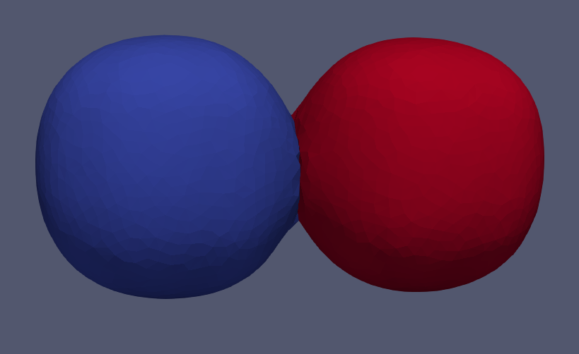
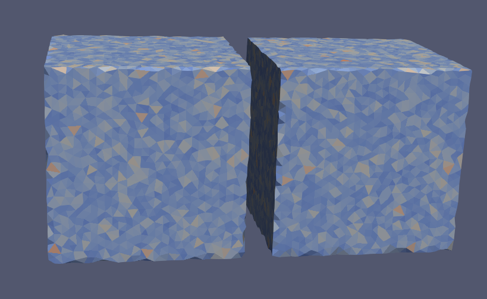

Output files#
A run writes the shapes of all cells at regular intervals as VTK meshes, per-cell statistics as a CSV file, and computational diagnostics as a second CSV file. This chapter describes each file, when it is written and what its columns and arrays contain. Viewing and plotting the files is covered in Visualization.
Output folder#
All files go to the output folder: output_mesh_folder_path from the parameter file,
or the folder given with --output-dir (Running simulations).
Warning
The output folder is deleted with all its contents when a run starts.
<output folder>/
├── simulation_statistics.csv per-cell statistics, every 50 iterations
├── performance_diagnostics.csv diagnostics, every 100 iterations (unless --diagnostics-csv)
├── cell_data/
│ ├── result_1.vtk one polyhedron per cell, with cell arrays
│ ├── result_2.vtk
│ └── ...
├── face_data/
│ ├── result_1.vtk one triangle per face, with face and node arrays
│ ├── result_2.vtk
│ └── ...
└── region_data/ only with POLARIZATION_MODE_INDEX 2
└── result_<n>.vtk
Mesh files#
When mesh files are written#
At the start of every iteration, before the mesh refiner runs, the solver computes
where \(t\) is the simulation time and \(T_s\) the sampling_period. When \(n\) differs from the
number of the last file written, it writes cell_data/result_<n>.vtk and
face_data/result_<n>.vtk. So result_1.vtk is the initial state (\(t = 0\)), and file \(n\)
is the first state at or after \(t = (n-1)\,T_s\). A run writes about
simulation_duration / sampling_period files of each kind; no file is written at the very end
of the run.
With time_step \(10^{-7}\) s and sampling_period \(10^{-6}\) s, a mesh pair is written every
10 iterations. The shipped parameters_vesicle.xml has simulation_duration \(10^{-2}\) s and
therefore writes about \(10^4\) pairs.
Important
The files are ASCII and large. For the 434-cell vesicle mesh (fig_3_vesicle.vtk), the first
cell_data file is about 29 MB and the first face_data file about 78 MB. Check
simulation_duration / sampling_period against the free disk space before a long run, and
increase sampling_period if necessary.
All mesh files are legacy VTK 4.2 ASCII unstructured grids with node coordinates in metres. Both kinds contain the same nodes; they differ in how the faces are grouped and in the data arrays attached.
Cell meshes (cell_data/)#
Each cell is one polyhedron (VTK cell type 42) made of its triangles, so ParaView treats a whole cell as one object and colours it by cell values. The format is the input-mesh format (Input meshes), so these files can be used as input meshes.

A cell mesh coloured by a cell array.#
Cell arrays (defined in cell_data_mapper_lst, include/io/mesh_data.hpp):
Array |
Type |
Unit |
Content |
|---|---|---|---|
|
int |
Identifier of the cell. Unique within a run: daughters of a division receive new identifiers, and identifiers of removed cells are not reused. |
|
|
int |
|
|
|
float |
m² |
Surface area \(A\). |
|
float |
m³ |
Volume \(V\). |
|
float |
Pa |
Pressure \(p\). |
|
float |
m³/s |
Growth rate drawn for this cell. |
|
float |
m³ |
Volume at which the cell divides; |
|
int |
1 for static cells, 0 otherwise. |
Face meshes (face_data/)#
Each triangle is a separate VTK cell (written as VTK cell type 7, a polygon with three nodes), so ParaView colours each face by its own value. Use these files to look at face types, polarization and contacts.

A face mesh coloured by a face array.#
Face arrays (defined in face_data_mapper_lst):
Array |
Type |
Unit |
Content |
|---|---|---|---|
|
float |
m² |
Area of the triangle. |
|
float |
|
|
|
int |
|
|
|
float |
N/m |
Surface tension of the face’s type. |
|
float |
J |
Contact energies of the face. Only if |
|
vector |
Outward unit normal of the face. Only if |
Node arrays (defined in node_data_mapper_lst), written only with contact model 2
(CONTACT_MODEL_INDEX 2, the default):
Array |
Type |
Unit |
Content |
|---|---|---|---|
|
int |
1 if the node is coupled to a node of another cell. |
|
|
double |
1/m |
Mean curvature at the node, as compared with |
|
int |
Number of nodes of other cells coupled to this node. |
The compile-time switches FACE_STORE_CONTACT_ENERGY, WRITE_NORMALS_IN_OUTPUT_MESH_FILE and
CONTACT_MODEL_INDEX are described in Compile-time configuration.
Region meshes (region_data/)#
Only with POLARIZATION_MODE_INDEX 2 (polarization by discretisation of space): the folder
region_data/ receives, together with each mesh pair after the first iteration, a file
result_<n>.vtk with the spatial regions that the automatic polarizer uses
(Polarization).
Statistics CSV#
simulation_statistics.csv (the statistics CSV) holds one row per cell per sample. It
is written at iterations 0, 50, 100, … (every 50 iterations, independently of
sampling_period) and once more when the run ends normally. Rows are appended as the run
proceeds, so the file is usable while the run is in progress.
Header and first row from a run of parameters_vesicle_quick.xml:
iteration,computation_time_(hh::mm:ss),simulation_time,cell_id,type_id,area,target_area,volume,target_volume,pressure,cell_contact_area_fraction,kinetic_energy,surface_tension_energy,membrane_elasticity_energy,bending_energy,pressure_energy,total_potential_energy,
0,00:00:04,1.00e-07,0,2,4.723e-09,9.746e-10,3.043e-14,3.043e-14,2.517e-03,0.000,1.837e-17,9.446e-13,0.000e+00,0.000e+00,7.607e-11,7.701e-11,
Every line ends with a comma, so CSV readers see one extra, empty column at the end (pandas
names it Unnamed: 17 in this example).
Column |
Unit |
Content |
|---|---|---|
|
Iteration at which the row was written. |
|
|
Wall-clock time since the solver started, as |
|
|
s |
Simulation time at the end of that iteration, with three significant digits. |
|
As in the cell meshes. The number of cells at a sample is the number of rows with that |
|
|
|
|
|
m² |
Surface area \(A\). |
|
m² |
\(A_0 = (Q\,V^2)^{1/3}\), with \(Q\) the |
|
m³ |
Volume \(V\). |
|
m³ |
Target volume \(V_0\), which grows with the growth rate. |
|
Pa |
Pressure \(p\). |
|
Fraction of the cell surface in contact with other cells. Only with |
|
|
J |
Contact energies of the cell. Only if |
|
J |
Kinetic energy of the cell’s nodes. |
|
J |
Surface tension energy. |
|
J |
Area elasticity energy. |
|
J |
Bending energy. |
|
J |
Pressure energy. |
|
J |
Sum of the four preceding energies (contact energies are not included). |
The energy terms are defined in Cell mechanics.
Changed in version 2.1: membrane_elasticity_energy was always 0 in earlier versions.
Python runs (Python interface) do not write this file; the same table is returned as a string.
Reading the statistics CSV#
With pandas:
import pandas as pd
stats = pd.read_csv("simulation_statistics.csv")
stats = stats.loc[:, ~stats.columns.str.startswith("Unnamed")] # drop the empty last column
per_sample = stats.groupby("iteration")
n_cells = per_sample.size() # number of cells at each sample
mean_pressure = per_sample["pressure"].mean()
time = per_sample["simulation_time"].first()
scripts/data_plotting/plot_data.py plots the main quantities of this file
(Visualization).
Diagnostics CSV#
The diagnostics CSV records the cost of the computation and the activity of the
safeguards. It is written to performance_diagnostics.csv in the output
folder, or to the path given with --diagnostics-csv. A row is appended every 100 iterations,
starting at iteration 100, so runs shorter than 100 iterations do not produce the file. Each
row summarises the 100 iterations since the previous row.
Note
The file is opened in append mode and the header is written only when the file does not exist
yet. The default location is inside the output folder, which is cleared at start, so it always
starts empty. A path given with --diagnostics-csv outside the output folder keeps the rows
of earlier runs; delete the file first if that is not wanted.
Column |
Unit |
Content |
|---|---|---|
|
s |
Simulation time, written with three decimals ( |
|
s |
Wall-clock time as a Unix timestamp. |
|
Iteration. |
|
|
Number of cells. |
|
|
Divisions since the previous row. |
|
|
Coefficient of variation of an estimated per-cell workload (number of faces, contacts and other terms). Used by the adaptive scheduling mode (Parallel performance). |
|
|
Phase detected by the adaptive scheduling mode: |
|
|
ms |
Mean time per iteration of the mesh refinement, over the window. |
|
ms |
Mean time per iteration of contact detection and contact forces. |
|
ms |
Mean time per iteration of polarization and the internal forces of the cells. |
|
ms |
Mean time per iteration of the time integration. |
|
ms |
Sum of the four preceding columns. It excludes cell division, output and the other steps of an iteration, so it is lower than the wall-clock time per iteration. |
|
% |
100 x |
|
Cells removed by the safeguards since the previous row: numerically unstable cells and cells whose mesh refinement failed (Safeguards). |
To estimate the wall-clock time per iteration, use the difference of wall_epoch between two
rows divided by 100.
Added in version 2.1: The unstable_cells_removed column.
Adding a column or array#
The CSV columns and mesh arrays are produced by lists of small functions (“mappers”) in
include/io/mesh_data.hpp:
List |
Output |
|---|---|
|
columns of |
|
cell arrays of |
|
face arrays of |
|
node arrays of |
Each entry gives the column name, a VTK type name and a function that returns the value as a
string. For example, to add the number of nodes of each cell to the statistics CSV, add this
entry to file_data_mapper_lst:
cell_data_mapper("cell_nb_nodes", "int", [](cell_ptr c) -> std::string {
return format_number(static_cast<int>(c->get_node_lst().size()), "%d");
}),
and rebuild (cmake --build build). The new column appears after the existing ones.
See also
Visualization: ParaView and plotting.
Safeguards: the messages and counters of the safeguards.